Pedagogy Evaluation Platform — a web-based self-assessment tool implementing Firmin's (2020) Techno-Pedagogical Practice framework. Sprint 4 delivered a user dashboard with three years of history, handling of current and previous attempts, historical comparison with charts, ten-minute evaluation sessions, and storage of evaluation data only on completion. The interface was redesigned and the production platform was recovered from an outage.
| Mushfiqur Rahman | Lead Developer |
| Shafiullah Anik | Scrum Master |
| Albin Roy | Product Owner |
| Merajun Nabi | Tester |
| 01 | Summary |
| 02 | Sprint objectives |
| 03 | Sprint process |
| 04 | Production recovery |
| 05 | User dashboard and history |
| 06 | Current and previous attempts |
| 07 | Historical comparison |
| 08 | Ten-minute session |
| 09 | Anonymous until completion |
| 10 | Architecture and data model |
| 11 | Interface redesign |
| 12 | Quality assurance |
| 13 | Testing and acceptance |
| 14 | Risks and limitations |
| 15 | Deployment and outstanding items |
| 16 | Retrospective |
| 17 | References |
| 18 | Appendix |
Sprint 4 addressed six requirement areas raised by the client in sprint planning: a dashboard for signed-in users, storage and display of up to three years of evaluation data, correct handling of a current and a previous attempt (including the option to delete the previous one), year-to-year comparison presented with charts, a ten-minute limit on each evaluation session, and keeping an evaluation anonymous until it is completed.
All six are implemented, deployed to the live platform, and verified against the thirteen acceptance criteria derived from the client's wording (Section 13). The rules are enforced in the database rather than only in the browser, through a single write path for completed evaluations. The work also included a complete interface redesign and the recovery of the production database, which had become unreachable before the sprint began.
| Requirement area | Outcome | Status |
|---|---|---|
| R1 · User dashboard | A dashboard page showing the active result, overall progress, stored history and every attempt. | Delivered |
| R2 · Three-year history | Attempts retained and displayed for three years; older data purged automatically. | Delivered |
| R3 · Current and previous attempts | Up to two attempts per year; the newest is the active result; the previous attempt can be deleted at submission or from the dashboard. | Delivered |
| R4 · Historical comparison | Per-category Improved / Decreased / Stayed similar labels, a comparison bar chart and a year-to-year line chart. | Delivered |
| R5 · Ten-minute session | Visible countdown with warnings; on expiry answers are cleared and nothing is stored; late submissions are rejected by the database. | Delivered |
| R6 · Anonymous until completion | No sign-in or database write while an evaluation is in progress; one transactional write on submission. | Delivered |
| Interface redesign | All seven pages rebuilt on a shared, accessible design system. | Delivered |
| Email delivery | Results email function hardened and made provider-independent; sender account configuration outstanding (Section 15). | Outstanding |
| Measure | Value | Measure | Value |
|---|---|---|---|
| Acceptance criteria met | 13 of 13 | Production releases | 6 |
| Files changed | 32 | Lines added / removed | 6,836 / 3,393 |
| Automated database checks | 48, all passing | New database functions | 3 |
As specified by the client for Sprint 4.
| Ref | Requirement as stated |
|---|---|
| R1 | Create a UI/dashboard for the user. |
| R2 | Store and display evaluation data for up to 3 years. |
| R3 | Handle two attempts/results. When there are two values/attempts, the system should handle the previous and current result properly. The user should have the option to delete/override the previous attempt. If the previous attempt is deleted/overridden, only the current attempt should be used as the active result. |
| R4 | Allow users to compare their current results with previous years/past attempts, including category-wise progress. Show whether the user's teaching-practice scores have improved, decreased, or stayed similar. This can be displayed using graphs/charts on the dashboard. |
| R5 | Each evaluation/session should have a 10-minute session time. The system needs to manage what happens when that session expires. |
| R6 | The evaluation should remain anonymous while the session is in progress. Only after the session is completed should the system store the evaluation data. |
An early reading of R5 as an idle sign-out for account holders was replaced once the client's wording made clear that the ten minutes apply to each evaluation. An early reading of R3 as "one result per year, replaced automatically" was replaced by the client's "current and previous, with the option to delete the previous". Both earlier versions were superseded before release; the database migration was rewritten before it was run on the live system (Section 12, defect 1).
How the sprint was planned, tracked and closed.
The team works in Scrum with the client as the single source of requirements. Sprint planning took the client's six numbered requirement areas (Section 02) as the sprint goal and broke them into the backlog below. A story closed only when its acceptance criterion in Section 13 had evidence — a database test, a browser check, a network trace or a read-only probe against the live system. Two clarifications of the client's wording (R3 and R5, Section 02) arrived mid-sprint; both were absorbed before release rather than deferred.
Give returning participants a trustworthy view of their practice over time — current and previous attempts, three years of history, change by category — while keeping every evaluation private and unstored until it is complete.
| # | Story | Origin | Status |
|---|---|---|---|
| S1 | As a signed-in participant, I want a dashboard of my results so that my active result and history are in one place. | R1 | Done |
| S2 | As a signed-in participant, I want my evaluations kept for three years so that I can look back across several years. | R2 | Done |
| S3 | As a participant with two attempts in a year, I want the newest to be my active result and the earlier one kept as the previous attempt, so that a retake behaves predictably. | R3 | Done |
| S4 | As a participant, I want to delete or override my previous attempt so that only my current attempt is used. | R3 | Done |
| S5 | As a participant, I want to compare my current result with any past attempt, category by category, and see whether I improved, decreased or stayed similar. | R4 | Done |
| S6 | As a participant, I want year-to-year change shown as charts on my dashboard. | R4 | Done |
| S7 | As a participant, I want ten minutes per evaluation, with clear warnings and a defined outcome when time runs out. | R5 | Done |
| S8 | As an anonymous participant, I want nothing stored until I submit, so that an abandoned evaluation leaves no trace. | R6 | Done |
| S9 | As the client, I want the platform to look and read like a research instrument and to work on phones. | Added in sprint | Done |
| S10 | Restore the paused production database and apply the outstanding Sprint 3 and Sprint 4 migrations. | Unplanned (Section 04) | Done |
| S11 | As a participant, I want verification codes and results emails to arrive reliably. | Carried over | Sprint 5 |
Context for the sprint: the live platform was not working when work began.
At the start of the sprint, sign-in and anonymous participation both failed on the live
site. Investigation showed the fault was not in the application: the database host name
returned NXDOMAIN from two independent DNS resolvers (Google and Cloudflare).
The Supabase free-tier project had been paused after a period of inactivity, which removes
its public address. The command-line access token recorded in the handover notes had also
been revoked, so migrations could not be applied from the command line.
| Step | Action and result |
|---|---|
| Diagnosis | DNS lookups, authentication health and REST probes confirmed the project was unreachable rather than misconfigured. |
| Recovery | The project was restored from the Supabase dashboard and returned healthy (authentication settings unchanged: email sign-up and anonymous sign-in enabled). |
| Migrations | The outstanding Sprint 3 migration and the Sprint 4 migration were applied in order through the SQL editor (Figure 9). |
| Verification | Six read-only requests against the live database confirmed every server-side rule (Section 13). |
| Hardening | Sign-in and registration now report "Can't reach the sign-in service" instead of a raw "Failed to fetch" when the backend is unavailable. |
Free Supabase projects pause after one week without activity. A scheduled keep-alive request and a regular data export are recorded as outstanding items (Section 15).
Signed-in participants have a dashboard page (my-results.html, linked as
"Dashboard" in the navigation). It is built from the participant's stored attempts, read
under row-level security so each user can only ever load their own rows.
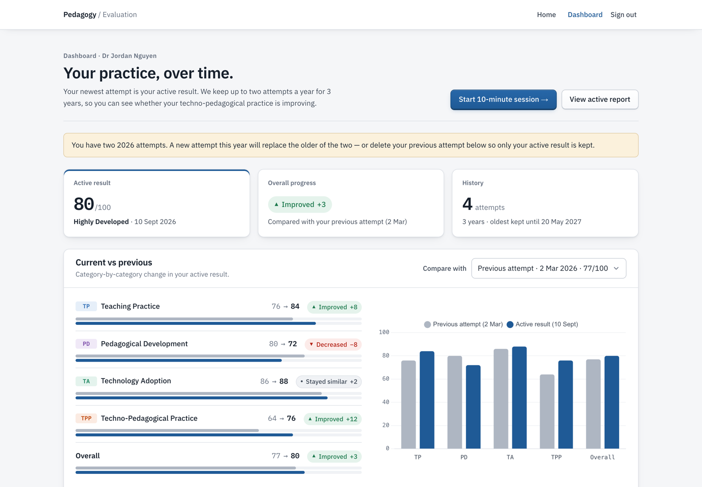
| Area | Content |
|---|---|
| Summary | Active result (overall score and descriptor), overall progress label against the selected comparison, number of attempts and the date the oldest will be removed. |
| Current vs previous | Selector for any earlier attempt; per-category rows with before and after scores, trend label and paired bars; comparison bar chart (Section 07). |
| Year-to-year progress | Line chart and table of each year's result for up to three years (Section 07). |
| All attempts | Every stored attempt with its status (Active result, Previous attempt, or year result), category scores, a link to its full report, and Delete for any attempt except the active result. |
| Other states | Signed-out, no attempts yet, and could-not-load messages, each with a clear next action. |
purge_expired_assessments() deletes any session older than three years. It runs on every submission and, where the pg_cron extension is available, daily at 03:15.| Rule | Behaviour |
|---|---|
| Active result | The newest completed attempt is always the active result. |
| Previous attempt | The next most recent attempt in the same calendar year (Australia/Melbourne) is kept for comparison. |
| Limit | At most two attempts per year; submitting a third removes the oldest of that year. |
| Delete / override at submission | After a second attempt, the completion screen asks whether to keep both or delete the previous attempt. |
| Delete later | The dashboard offers Delete on any attempt except the active result. |
| After deletion | Only the current attempt remains active; admin averages count one attempt per participant per year. |
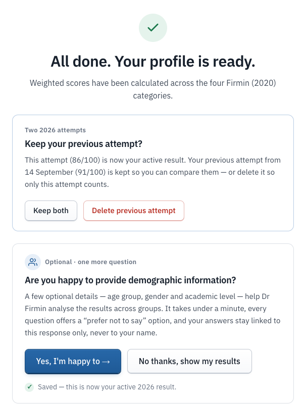
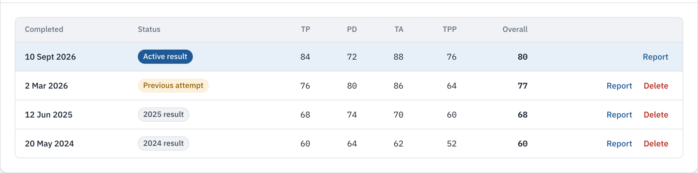
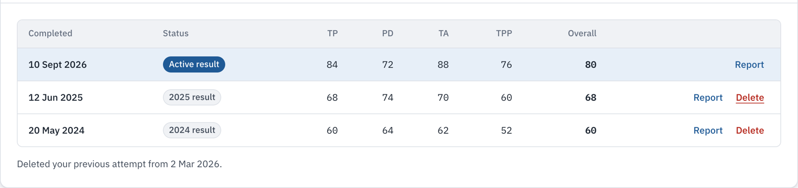
Both rules are enforced by database functions, not only by the interface.
submit_assessment() applies the two-per-year limit, and accepts a
p_replace_previous flag that removes all earlier same-year attempts in the same
transaction. delete_previous_attempt() deletes one of the caller's own attempts
and refuses when that attempt is the caller's most recent — so the active result cannot be
removed, whether by mistake or by a crafted request.
The comparison defaults to the previous attempt in the current year, or, if there is none, the most recent attempt from an earlier year. Any earlier attempt can be selected. Each category and the overall score receive one of three labels:
| Label | Rule |
|---|---|
| Improved ▲ | Score rose by more than 2 points. |
| Decreased ▼ | Score fell by more than 2 points. |
| Stayed similar ● | Change of 2 points or less, so small fluctuations are not presented as progress or decline. |
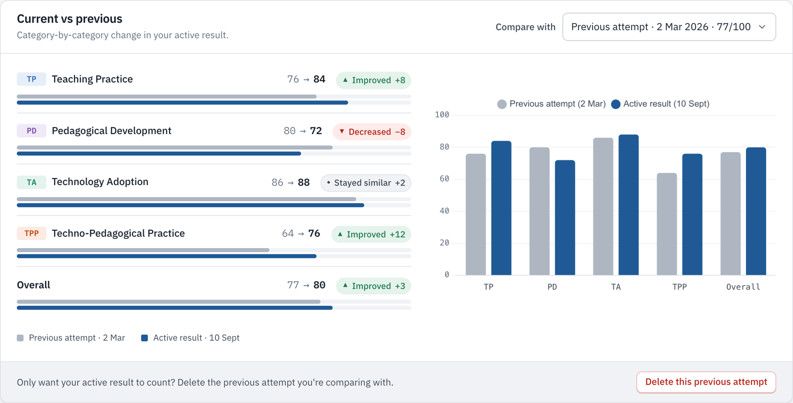
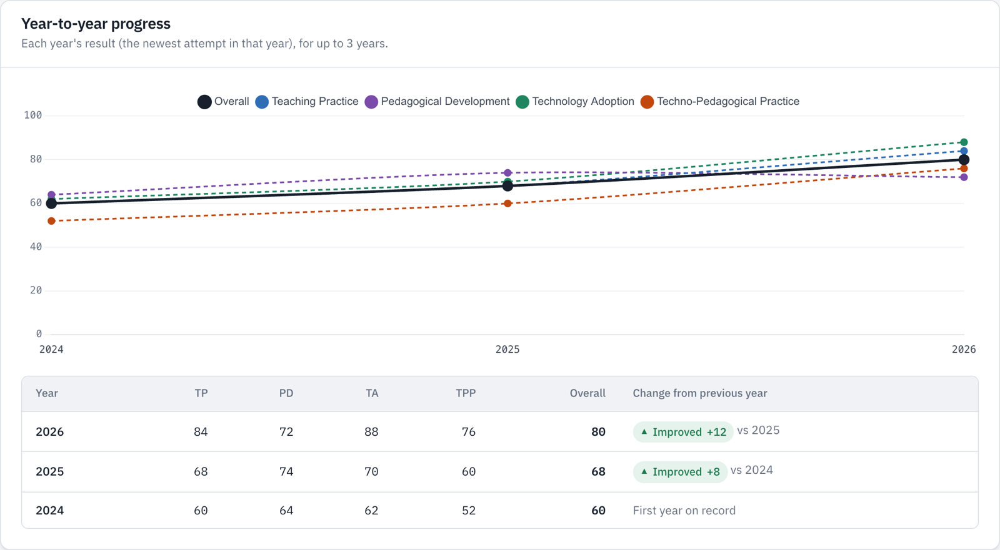
| Stage | Behaviour |
|---|---|
| Start | The clock starts when the participant begins the evaluation. The start time is kept in the browser, so refreshing, closing the tab or opening a second tab does not reset it. |
| Running | The remaining time is shown in the progress bar throughout the questions and the review screen. |
| Warnings | At two minutes the timer turns amber and at one minute red; each threshold is also announced to screen readers. |
| Expiry | Unsubmitted answers are cleared from the device, nothing is stored or emailed, and an expiry screen offers a new session or a return home. A participant returning after the time has passed sees the same screen. |
| Server check | submit_assessment() rejects any submission more than ten minutes after the recorded start (plus one minute's grace for slow connections) with SESSION_EXPIRED, and rejects a missing or future start time. |
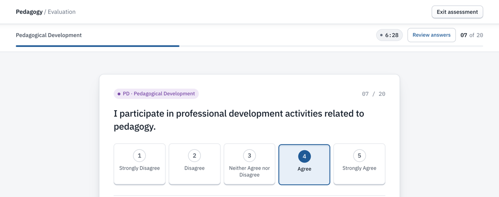
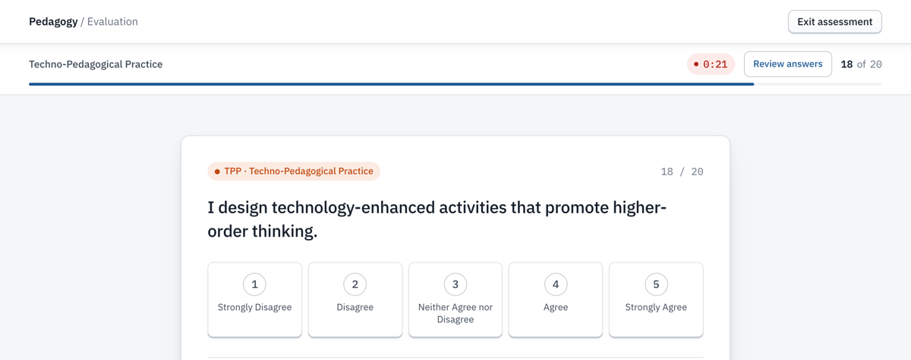
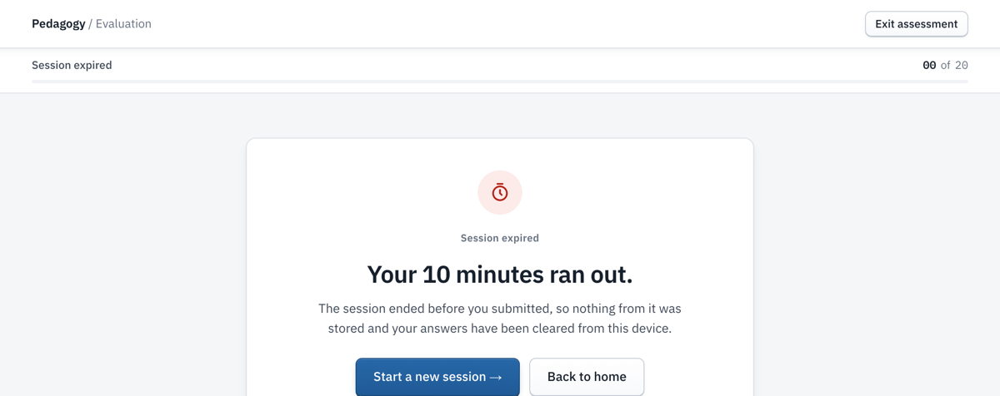
The start time is reported by the browser. The server check prevents ordinary circumvention (refreshing, reopening, submitting late), but a technically skilled user could alter the reported start time. This is appropriate for a reflective self-assessment; exam-grade enforcement would need a server-issued session token, which would conflict with R6 for anonymous participants.
Before Sprint 4, choosing "Continue anonymously" created an anonymous authentication account and a profile row, and beginning the questionnaire created a session row — so data existed before the evaluation was complete. Both behaviours were removed:
submit_assessment() stores the session and all twenty responses in one transaction, with no user attached for anonymous participants.| Observed during a full anonymous run | Network requests to the backend |
|---|---|
| Answering all twenty statements | 0 |
| Review screen | 0 |
| Submission | 1 database call (rpc/submit_assessment), then the results email request |
| Session expired before submission | 0 |
The platform remains a static front end (HTML, CSS and vanilla JavaScript on GitHub Pages) over Supabase (PostgreSQL, authentication, edge functions). Sprint 4 moved the evaluation rules into the database so they hold regardless of the client.
submit_assessment(p_responses jsonb, p_started_at timestamptz,
p_replace_previous boolean default false,
p_participant_email text default null) returns jsonb
1 reject a missing/future start time; reject if now − start > 10 min + 1 min grace
2 require exactly the active questions (20), each answered 1–5; reject extra keys
3 recalculate the four category scores from the answers (client scores are ignored)
4 insert the session and all responses in one transaction
5 signed-in only: remove abandoned in-progress rows; keep at most two attempts this
year (or remove all earlier ones when p_replace_previous)
6 purge sessions older than three years
7 return { session_id, scores, year, previous_id, removed }
| Database object | Purpose |
|---|---|
submit_assessment() | Only write path for evaluations. SECURITY DEFINER; executable by anonymous and signed-in roles. |
delete_previous_attempt() | Deletes one of the caller's own attempts; refuses the most recent. Signed-in role only. |
purge_expired_assessments() | Three-year retention. Not executable from the web roles. |
idx_sessions_user_completed | Index on (user_id, completed_at) for history queries. |
handle_new_user() (revised) | Account-creation trigger; now frees an email held by an orphaned profile row (Section 12, defect 6). |
| File | Responsibility |
|---|---|
js/session.js | Participant identity, sign-out, and the ten-minute session clock (PED.evalSession). Clears a different participant's answers on shared devices. |
js/assessment.js | Submission via submit_assessment(), attempt history, deletion; falls back to direct inserts if the migration is absent. |
js/questionnaire.js | Timer display, warnings and expiry; attempt notes on the welcome screen; keep/delete choice on completion. |
js/my-results.js | Dashboard rendering, comparison logic and charts (Chart.js). |
send-results-email | Edge function: emails a results summary only for a session completed in the last 30 minutes, using stored scores. |
sprint4-attempts.sql is idempotent and was tested both on a fresh schema and
applied over its own earlier draft. A one-off clean-up keeps at most two attempts per user per
year, removes abandoned in-progress rows older than a day, and applies the three-year purge.
The previous interface (dark theme, decorative animation, custom cursor, film grain, 3D card
tilt) was visually striking but read as a template and was harder to use for a research
instrument. All seven pages — home, questionnaire, demographics, results, report, user
dashboard and admin — were rebuilt on a shared design system in css/main.css.
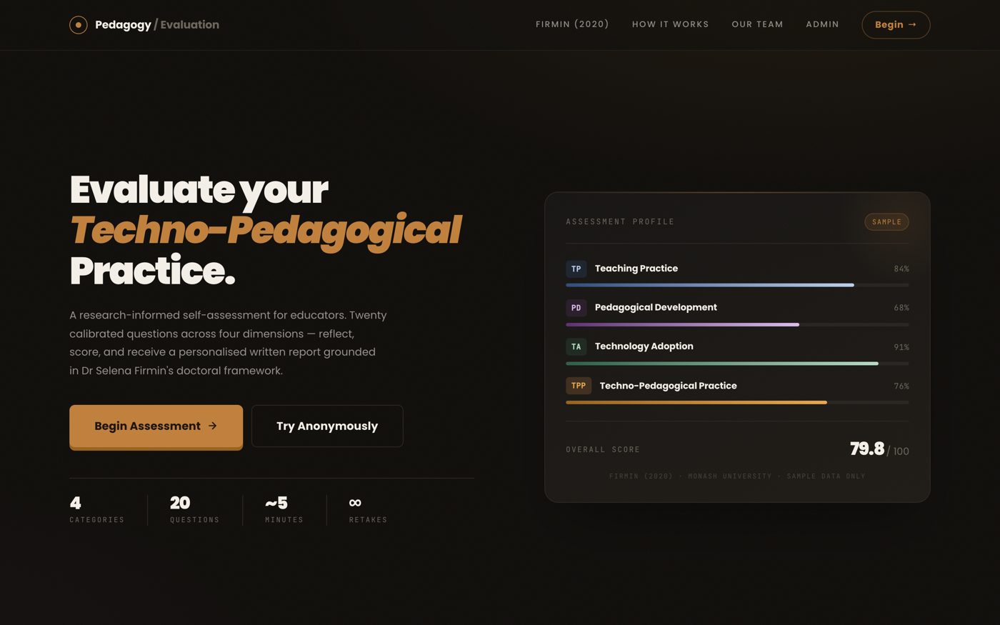
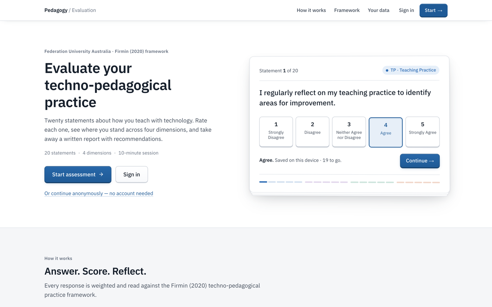
| Aspect | Decision |
|---|---|
| Visual language | Light theme, one blue accent, restrained depth (layered shadows, tactile buttons and answer options). |
| Typography | IBM Plex Sans for text; IBM Plex Mono for scores, codes and the timer. |
| Colour meaning | The four framework category colours are used only to encode data (badges, charts). |
| Accessibility | WCAG AA text contrast, visible keyboard focus, skip link, reduced-motion support, layouts verified at 390 px width. |
| Removed code | Custom cursor script, GSAP animation library, 3D tilt, decorative gradients and grain. |
| Admin | Shares the site's tokens and components; averages count only each participant's active attempt per year. |
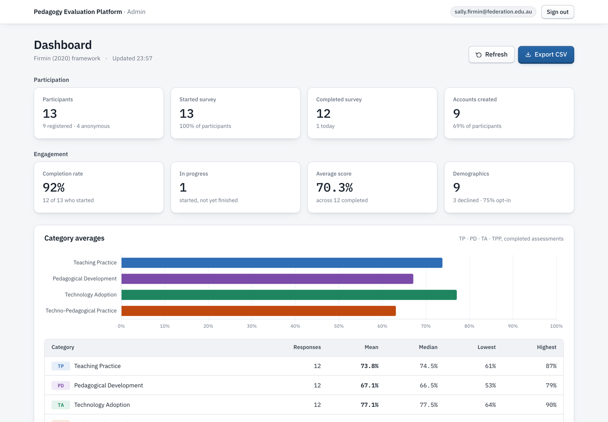
Defects found during development and review, all fixed and re-verified before release.
The first version of the attempt migration replaced a user's same-year result automatically, and its clean-up step deleted all but one attempt per year — contrary to the refined R3. It was rewritten before being run on the live database, and the new version was tested applied over the old one.
Starting anonymously created an authentication account and profile row, and beginning the questionnaire created a session row, contrary to R6. Removed; verified with a network trace (Section 09).
The function accepted scores and a recipient from any caller, so it could be used to send emails with fabricated content to any address. It now sends only for a session completed in the last 30 minutes, uses the scores stored in the database, and escapes participant-supplied text.
With a previous attempt kept, both attempts entered the category averages. The admin dashboard now counts only the newest attempt per participant per year.
At 375 px width the fifth answer option was cut off because grid items would not shrink below their content width. Fixed and verified on a 390 px viewport.
Creating an account failed when an old profile row (whose account had been deleted) still held the same email, violating the unique email constraint. The account-creation trigger now frees the email from orphaned rows. Reproduced and fixed in a test database (fix-new-user-trigger.sql).
A stylesheet rule overrode the hidden attribute; sign-in showed "Failed to fetch" during outages; emails labelled PD as "Professional Development". All corrected.
The migration was executed with PGlite (PostgreSQL compiled to WebAssembly) against the full
schema chain — supabase-setup.sql, admin-policies.sql,
sprint3-demographics.sql, sprint4-attempts.sql — with mocked
authentication functions for anonymous, signed-in and anonymous-token callers. The suite ran
on a fresh database and over the earlier draft of the migration (24 checks each, every
migration applied twice). All passed. Coverage: storage on completion only; expired, future
and missing start times; grace period; incomplete, out-of-range, non-integer, string and
extra answers; two attempts per year with the oldest removed; replace-previous; deleting a
previous attempt; refusal to delete the active result; refusal across users; cascade of
responses; three-year purge; permission denied on the purge function for web roles.
| Request to the live database (writes nothing) | Result |
|---|---|
| Submit an incomplete evaluation | Rejected — "All 20 questions must be answered" |
| Submit a session started 20 minutes earlier | Rejected — SESSION_EXPIRED |
| Delete an attempt without signing in | Refused — "Sign in to manage your attempts" |
| Call the purge function from the web | Permission denied |
| Read the demographics table | Present (Sprint 3 migration applied) |
| Read sessions without signing in | No rows returned (row-level security) |
In addition, a real account completed two attempts on the live site and received the keep/delete choice (Figure 2).
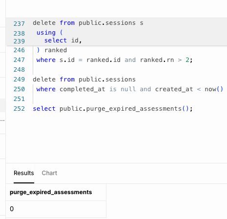
Each acceptance criterion derived from the client's Sprint 4 wording, with its evidence.
| # | Criterion | How it is met | Evidence | Result |
|---|---|---|---|---|
| 1 | Create a UI/dashboard for the user | Dashboard page for signed-in participants | §05, Fig. 1 | Met |
| 2 | Store and display data for up to 3 years | Three-year window; automatic purge | §05, DB tests | Met |
| 3 | Compare with previous years / past attempts, category-wise | Comparison selector; per-category rows | §07, Fig. 4 | Met |
| 4 | Handle previous and current attempts properly | Newest active; previous kept; two per year | §06, Fig. 2, live | Met |
| 5 | Option to delete/override the previous attempt | At submission and on the dashboard; replace flag | §06, Fig. 2–3, DB tests | Met |
| 6 | If deleted, only the current attempt is active | Active result undeletable; others removed | §06, Fig. 3b, DB tests | Met |
| 7 | Compare year-to-year or past data | Year-to-year chart and table | §07, Fig. 5 | Met |
| 8 | Show improved, decreased or stayed similar | Trend labels with a ±2-point band | §07, Fig. 4 | Met |
| 9 | Display using graphs/charts on the dashboard | Comparison bar chart; year-to-year line chart | §07, Fig. 4–5 | Met |
| 10 | Each evaluation has a 10-minute session | Visible countdown; server time check | §08, Fig. 6, live | Met |
| 11 | Manage what happens when a session expires | Warnings; answers cleared; nothing stored; restart | §08, Fig. 6 | Met |
| 12 | Anonymous while the session is in progress | No sign-in or writes during the evaluation | §09, network trace | Met |
| 13 | Store data only after the session is completed | Single transactional submission | §09–10, DB tests | Met |
Known risks carried into handover, with the mitigation in place or planned.
| Risk | Consequence | Mitigation | Status |
|---|---|---|---|
| Session start time is reported by the browser | A technically skilled participant could extend a session. | The server rejects late submissions. Exam-grade enforcement would need a server-issued token, which conflicts with R6 for anonymous participants. | Accepted |
| Free-tier database pauses after seven idle days | Sign-in and submission fail while paused. | Daily keep-alive request; answers stay on the device until submission; sign-in shows a clear outage message. | Outstanding |
| No automatic backups on the free plan | Data loss on project failure is unrecoverable. | Regular CSV export from the admin dashboard, or a paid plan. | Outstanding |
| Anonymous attempts have no owner | An anonymous participant's data cannot be located for deletion on request. | A consequence of R6. Anonymous rows expire under the three-year purge. | Accepted |
| Credentials recorded in the handover notes | Anyone holding the notes has full access. | Rotate keys, tokens and admin passwords before handover; the notes are excluded from the repository. | Required |
| Email sender not yet configured | Verification codes and results emails may not arrive. | The function is provider-independent; configure the project sender (Section 15). | Outstanding |
| Front-end libraries load from public CDNs | A CDN outage affects charts and PDF export. | Versions are pinned; self-hosting is a candidate for handover. | Accepted |
| Build and deployment knowledge held by one team member | Slow recovery if that person is unavailable. | Written handover guide planned for Sprint 5. | Sprint 5 |
| Commit | Date | Change |
|---|---|---|
98f6586 | 13 Sep 2026 | Home page redesign; initial attempt rules and session handling; yearly results page |
f9abeef | 13 Sep 2026 | User dashboard, current/previous attempts, ten-minute sessions, store on completion |
9ec0cf3 | 13 Sep 2026 | Redesign of every page on the shared design system |
7646f38 | 13 Sep 2026 | Refined depth and branding |
8a11b51 | 14 Sep 2026 | Results email function hardened |
ca23387 | 14 Sep 2026 | Email transport made provider-independent (SMTP or API) |
Front-end releases deploy through GitHub Pages from main; asset URLs carry a
version parameter so browsers load the new files. Database changes were applied in the
Supabase SQL editor. One deployment was delayed by a GitHub Pages service incident and was
re-triggered once the service recovered.
| Item | Detail | Status |
|---|---|---|
| Email sender configuration | Configure a dedicated project email account as the Supabase authentication SMTP sender and as the edge-function secrets, then deploy the updated send-results-email function. Until then verification codes and results emails are not reliably delivered to all participants. | Outstanding |
| Sign-up trigger fix | Confirm fix-new-user-trigger.sql has been applied to the live database. | Verify |
| Credential rotation | Rotate the keys, tokens and admin passwords recorded in the handover notes before handover. | Required |
| Database pausing | Add a daily keep-alive request so the free project does not pause again. | Outstanding |
| Backups | The free plan has no automatic backups; export participant data (CSV) regularly or move to a paid plan. | Outstanding |
| Ownership | Transfer the GitHub repository and Supabase project to university-owned accounts. | Sprint 5 |
| PDF export check | Re-test the report page's PDF export on the redesigned page. | Verify |
| Team details | Following a change in team membership, the home page team section now matches this report (Product Owner Albin Roy; Tester Merajun Nabi). Ships with the next front-end release. | Next release |
Email from a university sender address; handover of accounts with rotated credentials; a written handover guide (setup, migration order, administrators, recovery from pausing); and research views that break scores down by demographic group.
What the team keeps, what it changes, and the actions carried into Sprint 5.
| Action | Why |
|---|---|
| Configure the project email sender and redeploy the results function | Closes the only outstanding requirement-level item (S11). |
| Add a keep-alive request and a scheduled data export | Removes the two failure modes of the free tier (Section 14). |
| Rotate every credential and hand ownership to university accounts | Required before the platform leaves the team. |
| Write the handover guide | Setup, migration order, administrators and recovery from pausing, so the platform does not depend on one person. |
Chart.js contributors. (2024). Chart.js (Version 4.4.1) [Computer software]. https://www.chartjs.org
ElectricSQL. (n.d.). PGlite: Postgres in WebAssembly [Computer software]. https://pglite.dev
Firmin, S. (2020). Unravelling pedagogy: The role of technology in shaping IT academics' perceptions and application of teaching and philosophy [Doctoral dissertation, Monash University]. ProQuest Dissertations & Theses Global.
Supabase. (n.d.). Supabase documentation. https://supabase.com/docs
World Wide Web Consortium. (2023). Web Content Accessibility Guidelines (WCAG) 2.1. https://www.w3.org/TR/WCAG21/
| File | Change | Purpose |
|---|---|---|
sprint4-attempts.sql | Added | Attempt rules, session limit, store on completion, retention |
my-results.html, js/my-results.js, css/my-results.css | Added | User dashboard |
js/session.js | Added | Identity and ten-minute session clock |
js/landing.js | Added | Answerable first statement on the home page |
supabase/templates/confirm-signup.html | Added | Verification-code email template |
js/assessment.js, js/questionnaire.js | Modified | Submission, history, timer, expiry, attempt choice |
js/auth.js | Modified | Anonymous start without sign-in; clearer errors |
js/admin.js, admin.html, css/admin.css | Modified | Redesign; active attempts only in averages |
js/results.js, js/report.js, js/questions.js | Modified | Chart colours and redesign |
css/main.css and page stylesheets | Modified | Shared design system |
| All page HTML files | Modified | Redesign, session script, versioned assets |
supabase/functions/send-results-email/index.ts | Modified | Hardened, provider-independent results email |
js/cursor.js | Removed | Decorative custom cursor |
fix-new-user-trigger.sql, demo-sprint4-seed.sql | Added (local) | Account-creation fix; demonstration history for test accounts |